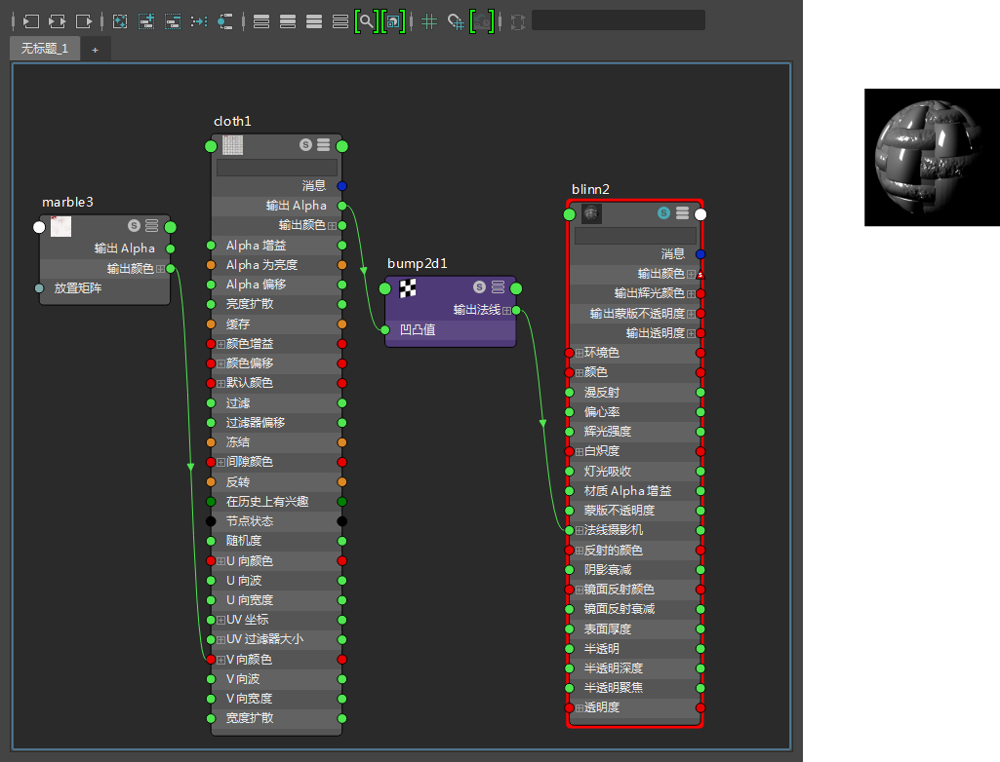
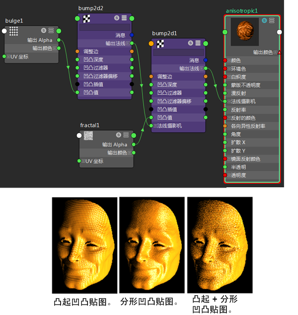

“凹凸 2D”(Bump 2d)工具节点将 2D 纹理转化为凹凸贴图。
创建 bump2d 工具节点
- 请执行下列任一操作：
- 在“Hypershade”中，使用鼠标中键将 2D 纹理样例拖放到材质样例上，并从显示的弹出菜单中选择“凹凸贴图”(bump map)。
- 在 Hypershade 窗口的“创建”(Create)选项卡中找到此工具。
- 请参见在“节点编辑器”中创建节点。
使用“提供 3D 信息”(Provide3d Info)为贴图分层纹理实现凹凸效果
- 将一个 2D 纹理映射到材质的“凹凸贴图”(Bump Mapping)属性。
- 将一个 3D 纹理映射到 2D 纹理的“颜色”(Color)属性（如“V 向颜色”）。
- 双击 Hypershade 中的 bump2d 样例打开 bump2d 的特性编辑器，并启用“提供 3D 信息”(Provide3d Info)（位于“效果”(Effects)标题下）。
Maya 会对两个纹理应用凹凸贴图。

层叠或堆叠凹凸贴图
- 在 Hypershade 中，创建两个 2D 纹理和一个材质 - 在本例中为“分形”(Fractal)、“凸起”(Bulge)和“各向异性”(Anisotropic)。
- 创建“Bump2d”工具节点。
- 使用鼠标中键将“分形”(Fractal)节点拖动到 Bump2d 工具节点上，并从显示的弹出菜单中选择“凹凸值”(Bump Value)。
- 创建另一个 Bump2d 节点，并使用鼠标中键将“凸起”(Bulge)节点拖动到新的 Bump2d 工具节点上。从显示的弹出菜单中选择“凹凸值”(Bump Value)。
- 选择第一个 Bump2d 节点，然后单击 3 以在完全模式下显示节点。
有关节点的视图模式的详细信息，请参见在节点编辑器和 Hypershade 中更改视图模式。
将显示搜索字段。在搜索字段中，输入“法线”(Normal)。通过此功能，可以轻松地隔离所需的属性。
在属性列表中仅显示“法线摄影机”(Normal Camera)属性。将第二个 Bump2d 节点的“输出法线”(Out Normal)属性连接到第一个 Bump2d 节点的“法线摄影机”(Normal Camera)输入属性。
- 使用鼠标中键将第一个 Bump2d 节点拖动到“各向异性”(Anisotropic)节点特性编辑器中的“凹凸/法线贴图”(Bump/Normal Mapping)属性。 
- 选择“各向异性”(Anisotropic)节点，然后单击工作区工具栏中的
 以重新绘制着色器网络。
以重新绘制着色器网络。 通过单击其
 图标单放“各向异性”(Anisotropic)节点，并在材质查看器中查看着色器渲染。
图标单放“各向异性”(Anisotropic)节点，并在材质查看器中查看着色器渲染。
提示： 如果对使用环境贴图的一个材质进行凹凸贴图，请将凹凸节点的“输出法线”(Out Normal)属性连接到“环境”(Environment)纹理的“法线摄影机”(Normal Camera)属性和材质的“法线摄影机”(Normal Camera)属性。否则，在凹凸区域中不能正确地反映环境。
Maya 为您提供了 MEL 脚本来完成此任务。将环境贴图的“输出颜色”(Out Color)连接到材质的“反射的颜色”(Reflected Color)后，在命令行中键入 cnctBumpProjNormal shader-name（其中 shader-name 是材质的名称）。
删除 bump2d 贴图
- 打开材质的“属性编辑器”(Attribute Editor)。
- 在“凹凸贴图”(Bump Mapping)一词上单击鼠标右键。
- 从弹出菜单中选择“断开连接”(Break Connection)。